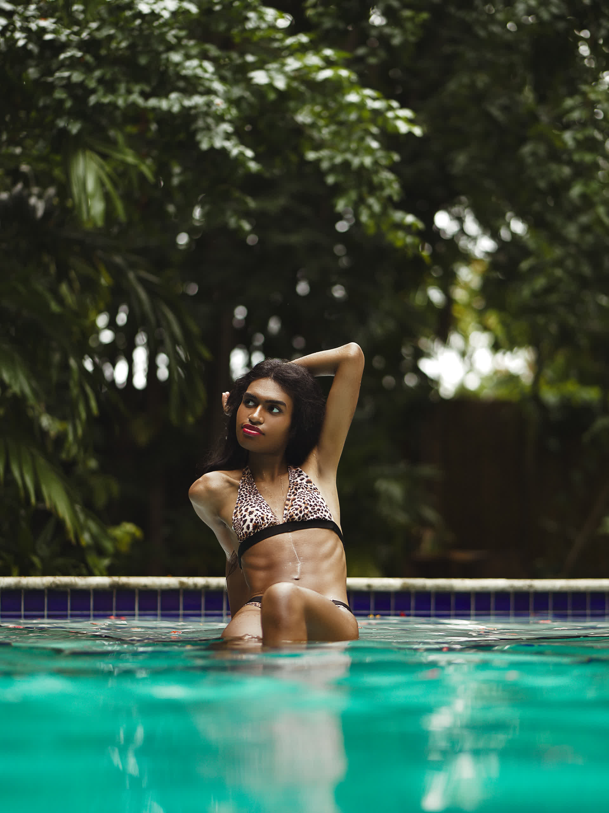

Miami, FL — May 31, 2025 — Rising model Aria Carmona made waves at FUSION Swim Week Miami 2025, debuting in her first major runway show during Miami Swim Week. The high-energy event, held on May 31st and streamed globally on SHIFT via YouTube, spotlighted emerging designers and dynamic new modeling talent.
The 21-year old walked for emerging label Frisk Me Good, known for its innovative approach to swimwear and statement pieces. Braving the rainy conditions, in a one-piece Frisk Me Good look, Aria brought energy and talent to the runway.
The Miami show marked a major step in Aria’s rising career, following an appearance at Dallas Fashion Week earlier this year in March. She then participated in a photoshoot the following morning, shooting media and content for the iconic Krissy King brand.
FUSION Swim Week continues to champion diverse talent, making it the perfect stage for fresh faces such as Aria to shine. As she transitions from regional events to larger fashion platforms, her newfound experiences in Miami signal that this is only the start of a blossoming career in the industry.
Follow Aria on Instagram @aria.glo to stay up-to-date on her journey and upcoming projects.
Back to news